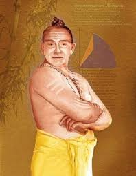

List and Biographies of Great Mathematicians
Madhava
Madhava
Madhava of Sangamagrama is an Indian mathematician from the 14th century and is also known to be a great astronomer. He was born in the Indian state of Kerala in 1350. Very less is known about the early education of Madhava, but his great contributions in mathematics and astronomy are still widely acknowledged. He is famous for establishing the Kerala School of Astronomy and Mathematics.
List and Biographies of Great Mathematicians Madhava Madhava Madhava of Sangamagrama is an Indian mathematician from the 14th century and is also known to be a great astronomer. He was born in the Indian state of Kerala in 1350. Very less is known about the early education of Madhava, but his great contributions in mathematics and astronomy are still widely acknowledged. He is famous for establishing the Kerala School of Astronomy and Mathematics. Many of the mathematicians who came after Madhava and worked further on his discoveries have been found to refer to him and acknowledge his work in their publications. But, most of Madhava’s own work cannot be found today. Madhava did a lot of work and contributed to various subjects of mathematics. Some of them include;
Infinite Series
Trigonometric functions can also be expressed through infinite series; many of these series were discovered by Madhava. The series that he derived and proved include
1.) Madhava’s sine series (power series for sine)
2.) Madhava’s cosine series (power series for cosine)
3.) Madhava–Gregory series or Gregory–Madhava series (power series for inverse tangents)
4.) Madhava’s formula for π (obtained by expansion of power series for inverse tangents
These series initially written by Madhava (as his successors show in their books) later got rediscovered by mathematicians of the West who represented those using modern notations. For instance, Madhava’s sine series and cosine series got rediscovered by Isaac Newton in 1670, Madhava’s series for arctangent got rediscovered by James Gregory in 1671 while in 1676 Wilhelm Leibniz rediscovered all of Madhava’s series. This is the reason his series are often known as Leibniz series.
Madhava also discovered applications of his infinite series by expanding them. One of them was his formula for pi through which he obtained the value of pi up to 13 decimal places. This formula is also popular by the name of Madhava–Newton series or Madhava–Leibniz series or Leibniz formula for pi or Leibnitz–Gregory–Madhava series due to its rediscovery by Gregory in 1671 and later by Leibniz in 1676.
Trigonometry
By constructing the table of sines; Madhava applied his infinite series in trigonometry as well. In this table, he gave trigonometric sine values corresponding to twenty four angles that represented equal intervals in a circle.
Algebra
Madhava’s contributions in algebra are also phenomenal. Some of his algebraic works include;
1.) Rational fractions of π
2.) Polynomial expansion methods
3.) Convergence of infinite series
4.) Infinite continued fractions
5.) Use of iteration to solve transcendental equations
6.) Use of continued fractions for approximation of transcendental numbers
Calculus
Madhava took some results of the earlier mathematicians and worked on them. Many of his results formed basis for prominent future developments in calculus.
Kerela School of Mathematics and Astronomy
Kerala School of Astronomy and Mathematics was a great initiative taken by Madhava that led many intelligent minds onto the path of new discoveries. This school ran for about two centuries after Madhava and it brought forth many researches and discoveries in the fields of mathematics, astronomy and linguistics.
This great Indian mathematician died in 1425. Many mathematicians are of the opinion that works done by Madhava and others from the Kerala School got transferred to Europe by the Jesuit missionaries and traders who were very active in that region of India in the 14th and 15th centuries.